Employee record
Custom employee table, fields, forms, lists and application navigation.
ServiceNow System Administrator
A hands-on ServiceNow portfolio showing how I designed, configured and tested an employee operations platform across ITSM workflows, CMDB, automation, security, SLAs, knowledge management, reporting and update sets.
This portfolio is built around a real ServiceNow Personal Developer Instance implementation. The goal was to practice the work a System Administrator performs: creating application data, enforcing security, automating processes, managing ITSM records, modeling CMDB relationships, measuring data quality and packaging configuration changes with Update Sets.
SERVICE NOW CASE STUDY
A ServiceNow employee operations application used to demonstrate administration, ITSM and platform configuration skills. The solution combines a custom employee data model with onboarding automation and an operational support lifecycle.
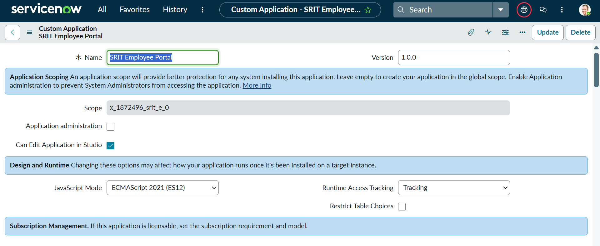
The portfolio follows a practical administration story rather than a collection of disconnected screenshots.
Custom employee table, fields, forms, lists and application navigation.
Flow Designer creates an onboarding task, sends an email and updates the employee record.
Incident assignment and SLA handling lead into Problem, Change and Knowledge processes.
Business Rules, Client Scripts, UI Policies, Data Policies, ACLs and roles enforce behavior.
Custom CIs, relationships, Query Builder and Health metrics demonstrate configuration management.
Reports, dashboards and Update Sets package the work for review and promotion.
FLOW DESIGNER
The Employee Onboarding Automation flow is triggered when a new SRIT Employee record is created. It creates an onboarding task, sends an email and updates the employee record to active.
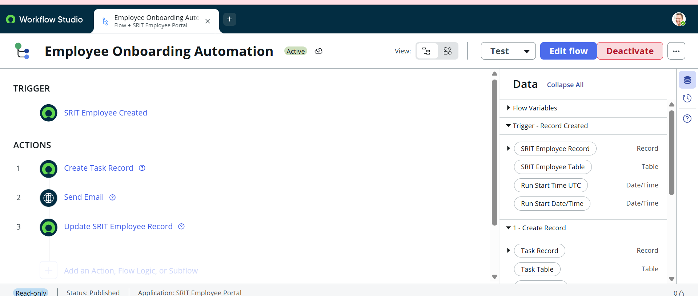
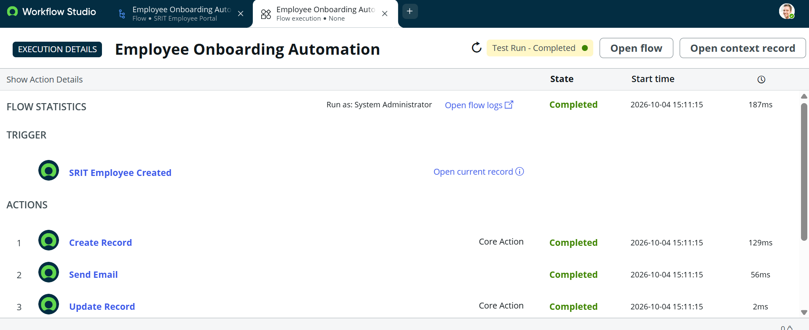
A recurring network issue was used to practice the relationship between Incident, Problem, Change and Knowledge Management.
Network incident assigned automatically to SRIT Network Support.
Critical Incident SLA starts, pauses on On Hold and stops at Resolved.
Recurring network connectivity issue analyzed; faulty switch identified as root cause.
Normal Change used to replace the faulty switch and validate connectivity.
Workaround, cause and resolution documented for future support.
Selected screenshots from the ServiceNow PDI implementation. Click any image to enlarge it.
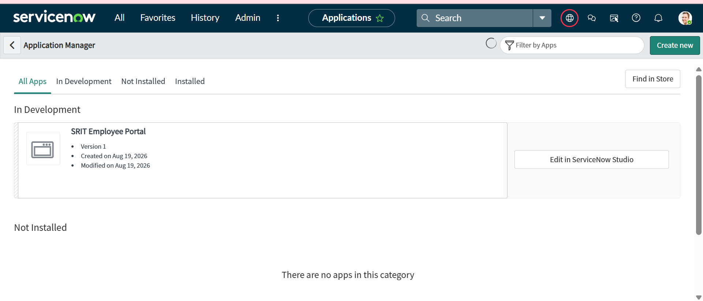
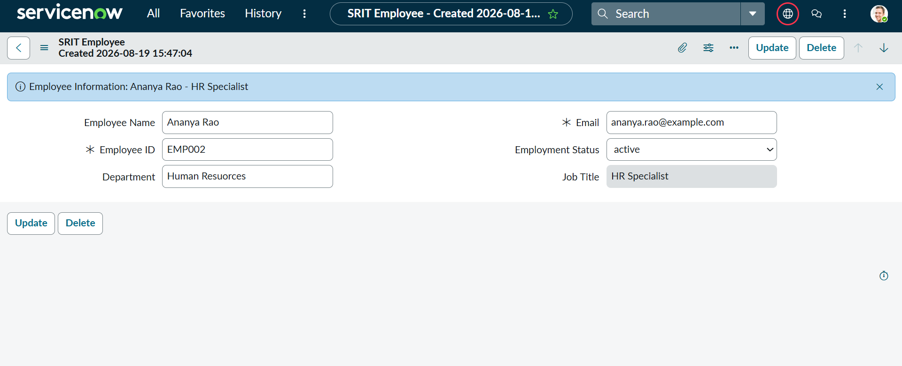
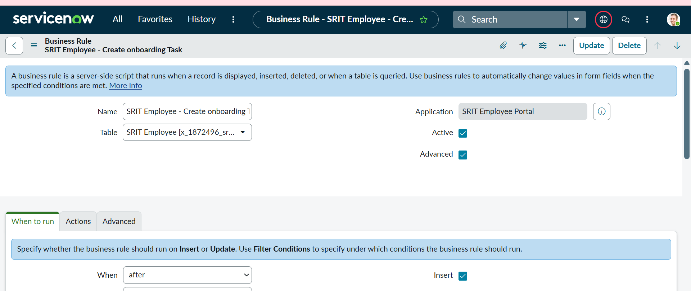
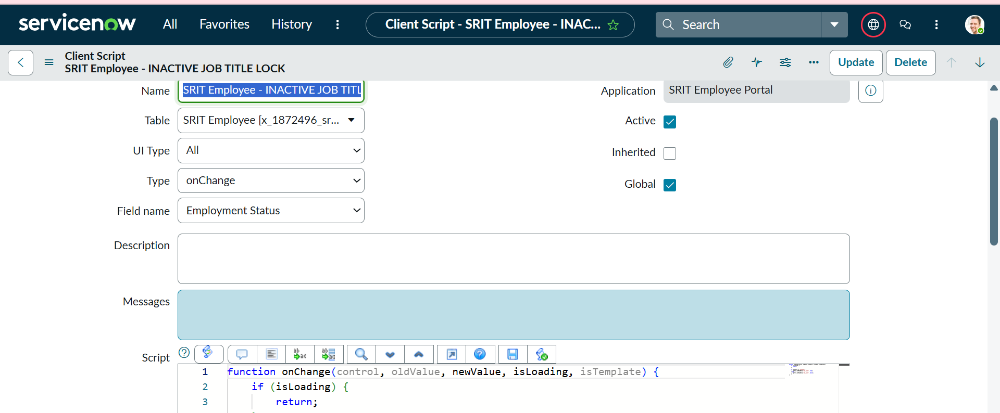
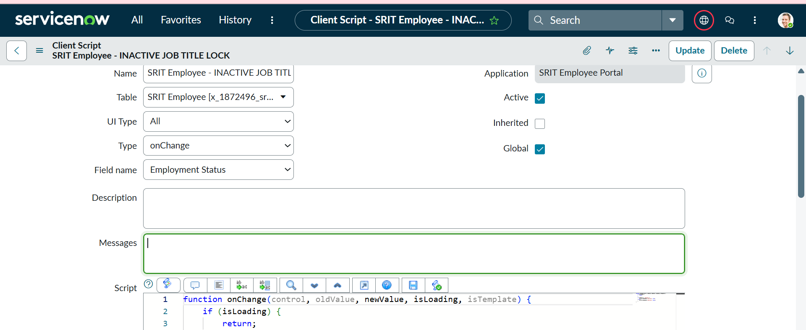
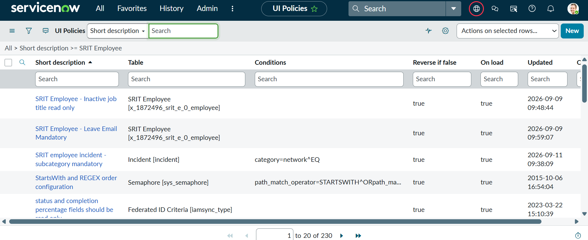
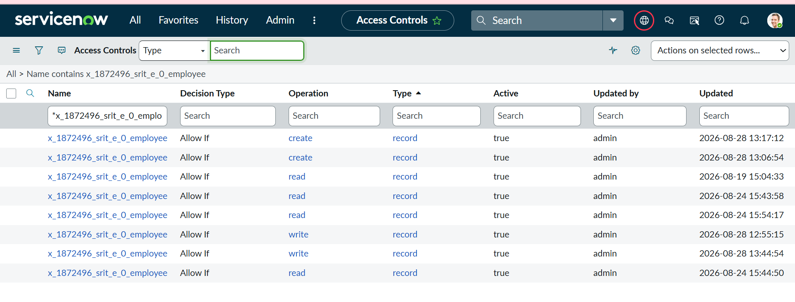
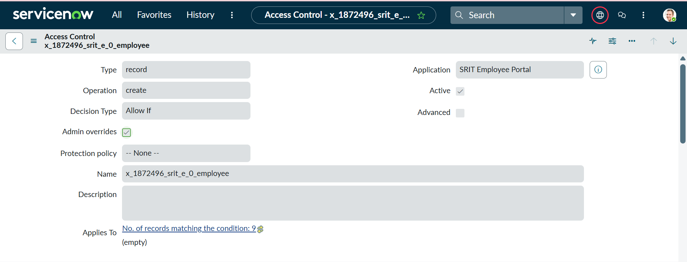
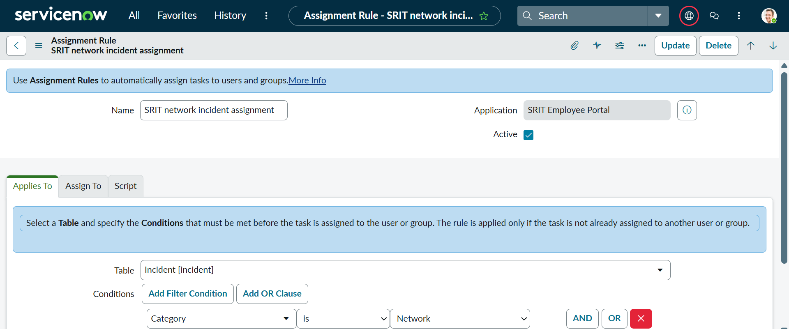
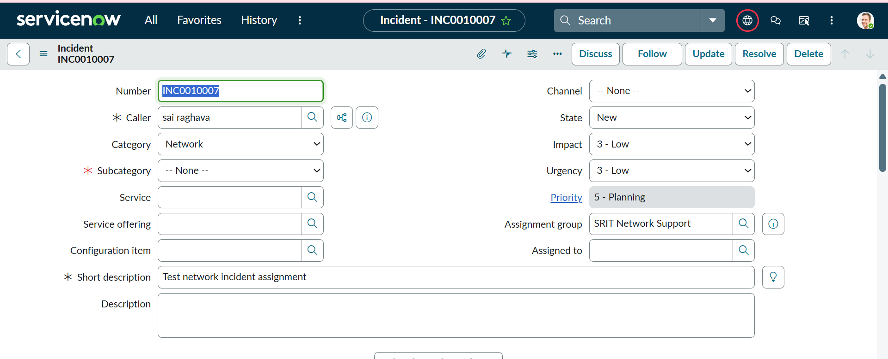
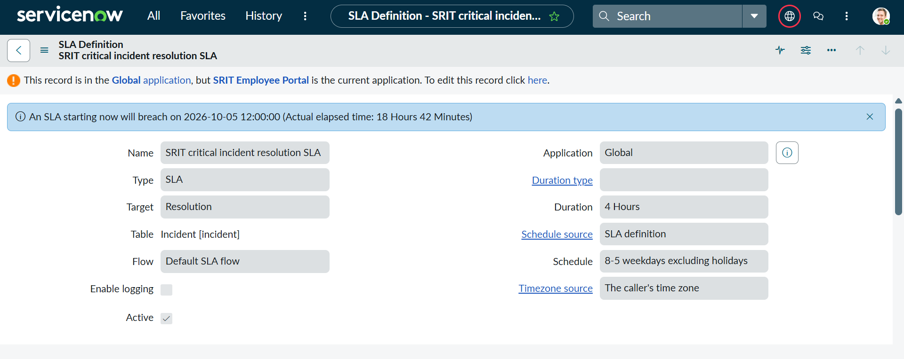
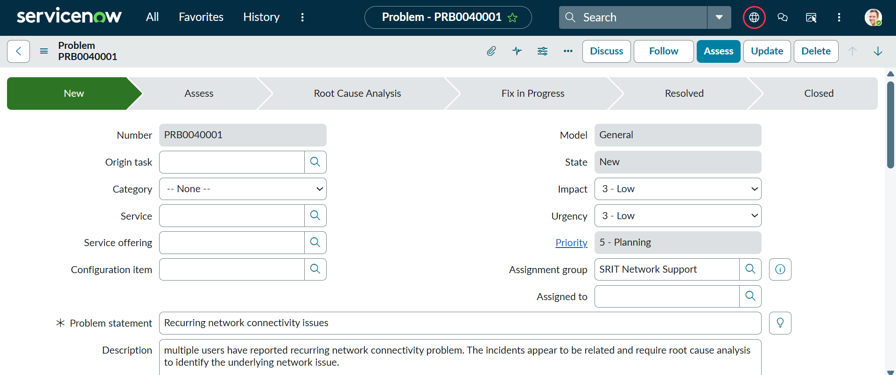
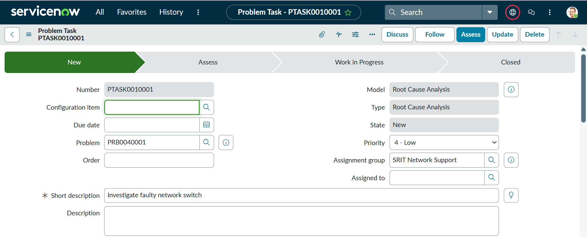
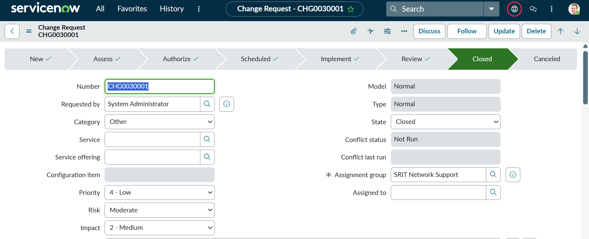
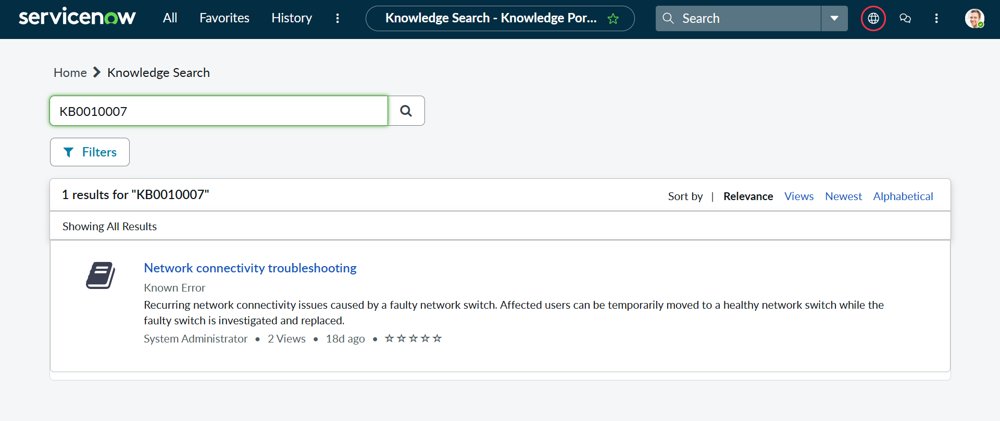
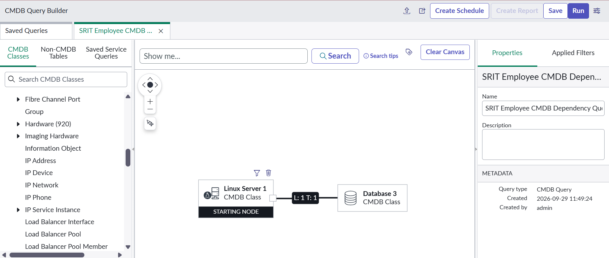
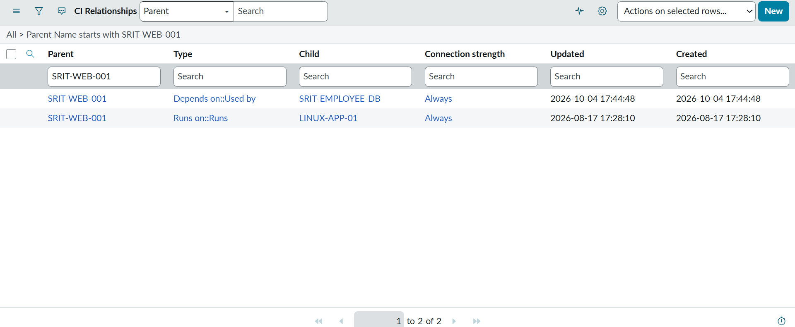
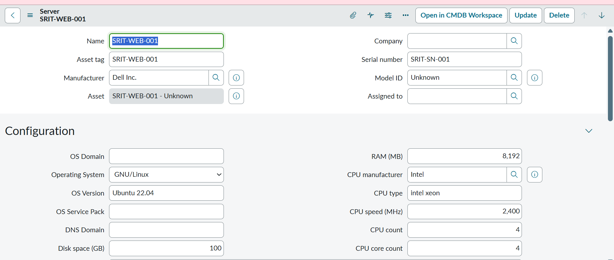
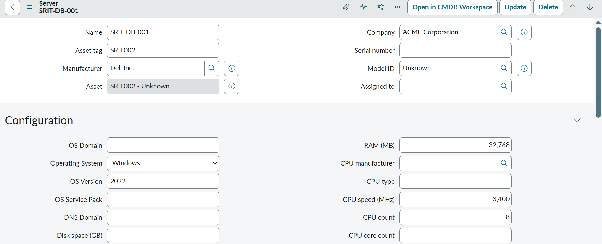
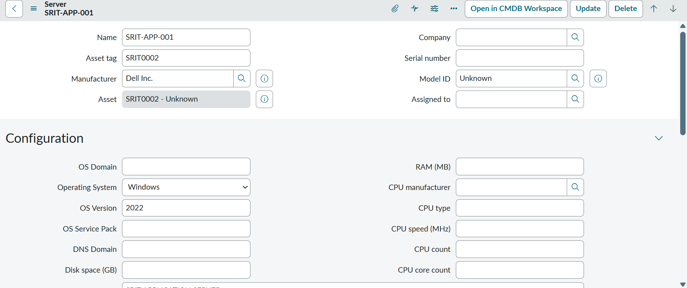
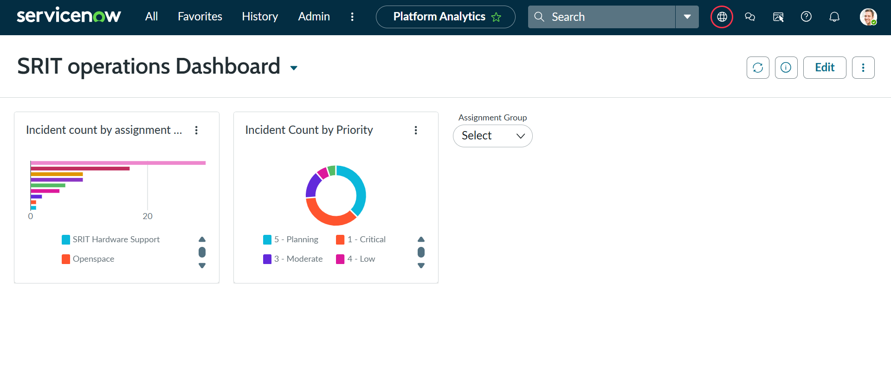
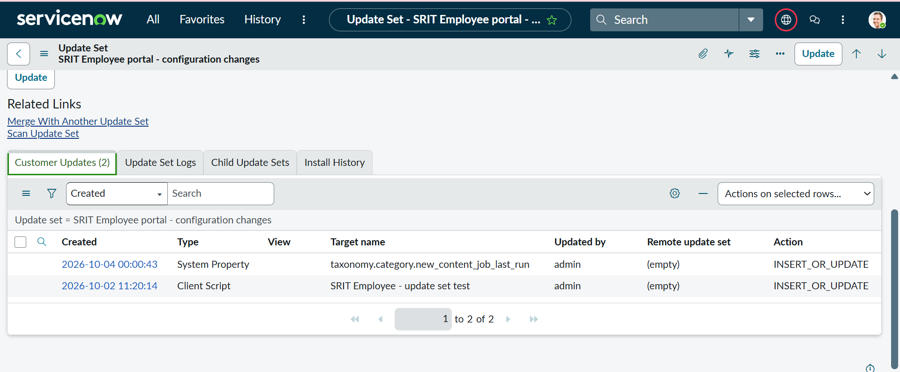
Lifecycle handling, assignment rules, state transitions and operational documentation.
Server-side and client-side behavior, UI Policies and validation.
Custom role creation and table-level Read, Write and Create access controls.
CI modeling, relationship queries, Query Builder and data-quality metrics.
Record trigger, task creation, notification and record update automation.
Resolution SLAs, Known Error documentation, reports, dashboards and configuration packaging.
PROJECT OUTCOME
Build tables, fields, forms, rules, policies, roles and workflows.
Validate automation, assignment, SLA behavior, security and CMDB relationships.
Capture implementation evidence through real PDI screenshots and operational outcomes.
For recruiters, hiring managers, referrals or project discussions:
sairaghava799@gmail.com